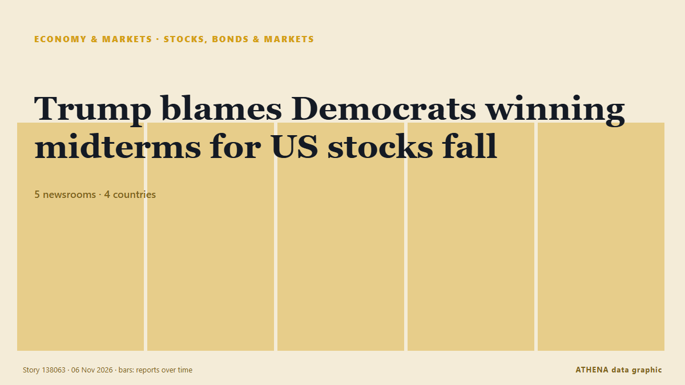

Acciones, bonos y mercados
PatrocinadoPresentado por  Cybernetics and Artificial Intelligence Lab Welcome to the Cybernetics and Artificial Intelligence Laboratory, established at the Department of Business Administration of the National and Kapodistrian University of Athens. The lab is headed by Professor Dimitrios Thomakos. The lab aims to do research that can be published in top venues. Our research uses tools and methods of Artificial Intelligence, and lies in the following areas: - Forecasting - Decision making - Cyber security - Finance We are always looking forward to collaborating with exceptional students!
Cybernetics and Artificial Intelligence Lab Welcome to the Cybernetics and Artificial Intelligence Laboratory, established at the Department of Business Administration of the National and Kapodistrian University of Athens. The lab is headed by Professor Dimitrios Thomakos. The lab aims to do research that can be published in top venues. Our research uses tools and methods of Artificial Intelligence, and lies in the following areas: - Forecasting - Decision making - Cyber security - Finance We are always looking forward to collaborating with exceptional students!
| 24 oct | 0 |
|---|---|
| 25 oct | 0 |
| 26 oct | 1 |
| 27 oct | 0 |
| 28 oct | 0 |
| 29 oct | 0 |
| 30 oct | 1 |
| 31 oct | 0 |
| 1 nov | 0 |
| 2 nov | 6 |
| 3 nov | 3 |
| 4 nov | 7 |
| 5 nov | 5 |
| 6 nov | 1 |
Los titulares se muestran en inglés, tal como se publicaron.

Trump blames Democrats winning midterms for US stocks fall
US President Donald Trump attributed Thursday's stock market freefall to the electoral victory of his rival Democratic Party in midterm elections earlier this week. de Prothom Alo (English)
OpenAI will be ready for an IPO in 2027, says Greg Brockman
OpenAI will be ready to go public in 2027, president Greg Brockman said on Wednesday. de The Next Web
Gathering AI storm clouds doom tech stocks to darkest day in a year
Big tech stocks slumped Thursday, putting them on track for their biggest decline since the "Liberation Day" rout last year, the most significant shakeout yet in what has been a punishing autumn for… de The Korea Times
Wall Street slumps as sharp tech losses put Nasdaq on course for correction
This comes after a rally in the last session on the back of Democrats’ sweeping midterm election victory. de The Business Times
Gold hits a two-week high as dollar, Treasury yields ease after US midterm elections
US gold futures for December delivery climbed 1.8% to US$4,144.20. de The Business Times
Pierce Brosnan Endorses Callum Turner As Next James Bond As “He’s So Strong”; Josh O’Connor Reacts To Talk Around 007 Casting
Two names rumored to take on the James Bond role next are Callum Turner and Josh O’Connor, and reactions to the idea of them playing 007 on the big screen are coming in. de Deadline
US midterms live: Stocks climb as Democrats take control of Congress
HONG KONG: Asian stocks fell with the dollar Wednesday, with the Democrats enjoying big early gains in the US midterms as they look to take control of both houses of Congress, which analysts said… de New Straits Times
Global stocks rebound, dollar and oil fall after Democrats' election victory
Global markets rally as European shares hit two-month highs, US bond yields fall and currencies from Mexico to Canada gain. de TRT World
Gold, silver prices surge as US dollar drops after midterm elections
Bullion reclaims $4,000-per-ounce threshold while silver climbs toward $52 amid falling Treasury yields, greenback weakness. de Anadolu Agency (English)
Stocks surge, and the Dow soars 1,500 points as oil prices tumble following the US midterm elections
U.S. stocks soared Wednesday after President Donald Trump's party lost its sole control of Washington in the midterm elections.Stocks. de Mainichi (English)
Warm ocean temperatures threaten Tuna industry
The Pacific’s tuna industry could face annual losses of almost $210 million as rising ocean temperatures threaten the movement of tuna stocks across the region. de FBC News
Global markets slide as Democratic gains in US midterms rattle investors
Deutsche Bank notes that Democratic gains in Congress have weighed on US equity futures, particularly technology stocks, amid concerns over tighter AI regulation. de FXStreet
Gold Falls 0.65% to US$3,922 as US Yields Rise | Gold & Silver, Nov 3
Gold fell 0.65% to US$3,922 an ounce as US yields rose to 4.93% and the dollar firmed. de The Rio Times
Meta raises $15 billion in five-part US bond sale to fund AI expansion
Meta is aiming to raise between $20 billion and $25 billion in a bond sale as the company ramps up spending on infrastructure and AI models and services. de CNBC World
US stocks: S&P 500 ends down; Apple dips ahead of quarterly report
The major indices closed mixed for the day. de The Business Times
The midterms and the world
A Democratic sweep of both houses of Congress would see big changes on energy and trade in particular. de Financial Times - Global economy
An unusual sexual bond between a bull and a male donkey
Sex between animals of the same sex is widespread in nature. de Phys.org